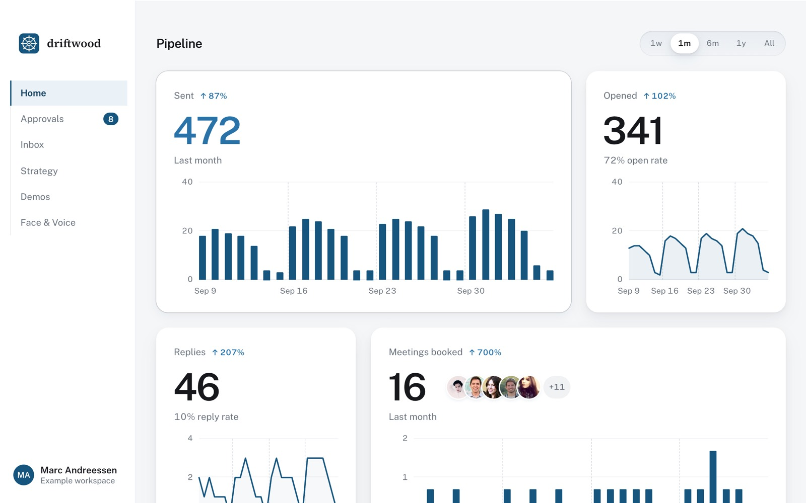

Design system
The walkthrough
The look I designed the Driftwood retention case study in: a dark page that reads one idea at a time, screens you can step into, and my own hand only where I'm pointing at something.
Every value here is copied from walkthrough.js, the template that builds the page. Spotify Mix uses it too, so a change there shows up on both.
Principles
Six rules the page keeps
One thing on screen at a time
Each idea gets its own screen of space. Once the next section's title reaches the middle of the screen, the one you just read blurs back.
Dark ground, light reading
Near-black ink behind everything. Body copy sits at a soft grey, and only headings and the words that matter reach full white.
Quiet until pointed at
Screens sit dimmed and the contents column waits as dashes. Hover or focus brings them up to full strength.
Red marks the problem, blue the answer
Gold marks the option that won and pink is my hand. No colour is there just for decoration.
My hand only points
Madhu Hand is kept for notes drawn onto screens and for the question under a screen in the viewer. Running copy is never handwritten.
No orphan words
Running text wraps so a last line never holds one word. Headings and short labels balance their lines.
Colour
Thirteen named tokens
These are named in :root. Every other colour on the page is a step between them, listed below.
Ground
--ink #0f1013The page--navy #121a2cA section can turn the whole page navy as you scroll into it--card #161a24Raised panels--line #262a33Borders, tab tracks#090a0dThe full-screen viewer, darker than the pageText
--hi #f3f4f6Headings, bold words--body #a9adb7Running copy--dim #6b6f7aLabels, captionsSignal
--blue #8fb2f2Eyebrows, the decision, charts--blue-soft #a9c4f5Filled buttons, step titles--cy #5fc0d8Focus rings, the cursor, the compare wipe--pink #ec6fa0Notes drawn in my hand--ok #62b58fA good number--bad #e2686bThe problem, a rejected option#f2c46dThe option chosen, highlightsClient themes
.t0 #a9c4f5.t1 #f2c46d.t2 #8fd8c6Steps between
| Use | Value |
|---|---|
| Hairline rules | #1d2028 section rules, #23262e chart grid |
| Borders | #2a2e38 frames, #232b40 blue-tinted cards, #3d5c8f the chosen card |
| Muted text | #8d93a1 card copy, #9aa0ad nav links, #c5c9d1 captions, #5f636d fine print |
| Glass | rgba(22,27,40,.82) nav pill, rgba(15,16,19,.88) open contents column |
Type
One sans, a serif wordmark, and my hand
Plus Jakarta Sans sets everything, from 300 for body copy to 600 for headings. The M--K wordmark keeps the site's Cormorant Garamond. Madhu Hand is for notes only.
- Hero title
clamp(38px, 6.2vw, 74px) / 1.04 · 600 · −.025em - Race to a faster first demo
- Hook line
clamp(30px, 4.2vw, 50px) / 1.2 · 500 · −.015em - About 6 rounds of revisions, across 2 weeks
- Section title
clamp(30px, 4vw, 44px) / 1.18 · 600 · −.01em - Getting a client to their first demo took 2.5–3 weeks
- The question
clamp(28px, 3.6vw, 40px) / 1.3 · 600 - How might we get new clients to their first great demo faster?
- Hero subline
clamp(19px, 2.4vw, 30px) · 300 - How I got new clients at driftwood to their first demo in 7 business days
- Lede
22px / 1.6 · 300 - The founder, Aayush, was signing clients fast and onboarding each one by hand with coding agents.
- Subhead
21px · 500 · hi - What clients told us
- Body
18px / 1.65 · 300 (16px under 700px) - Running copy is light and soft grey, so the few bold words do the work of a highlighter.
- Eyebrow
13px / 1 · 500 · .12em · caps · blue The problem
- Label
11–12px · .08em · caps - Kept · iteration 4
- Fine print
12px · #5f636d - Paraphrased from client calls
- Wordmark
Cormorant Garamond 22px · 400 · .02em - M--K
- Note
Madhu Hand 20px / 1.85 · pink - Reduced 12 tabs to 6 focused tabs
Shape and surface
Round controls, soft cards, hairline borders
| Token | Value | Where |
|---|---|---|
| Pill | 999px | Every button, chip, tab track, the nav |
| Frame | 16px | Screens in their browser chrome, the IA board |
| Card | 14px | Measures, options, quotes, results, the viewer stage |
| Shot | 12px | Bare screenshots in grids |
| Thumb | 8–10px | Viewer strip, compare pairs |
| Border | 1px solid | Always one pixel. Weight comes from colour, never thickness |
| Frame shadow | 0 30px 80px -40px rgba(0,0,0,.8) | Lit on hover to 0 40px 100px -40px rgba(95,192,216,.25) |
| Hero glow | 0 40px 120px -30px rgba(80,120,200,.35) | The laptop screen in the hero |
| Glass | blur(14px) nav, blur(12px) contents column | Only on things that float over the page |
Motion
One curve, driven by scroll
Everything eases on cubic-bezier(.2,.7,.2,1): quick to start, long to settle. Where the browser supports scroll timelines, motion is tied to the scrollbar. Without them, the text simply shows at full strength.
| Move | Spec |
|---|---|
| Fade up | Blocks rise 28px and fade in over .9s as they enter |
| Brighten | Text goes from .22 to full opacity between entering and 38% covered |
| Read past | A section you've read blurs to 6px at .3 opacity over .7s |
| Hook lines | Each line fades in through the middle 40–60% of its scroll range and out after |
| Bars draw | 1.4s. End labels arrive after 1.2s, once the bar is there |
| Tally dots | Fill one by one, 90ms apart |
| Underline | Key words get a 2px underline that draws across over 1.2s |
| Card flip | .75s cubic-bezier(.3,.7,.2,1) on the vertical axis, 1100px perspective |
| Top bar | Slides away reading down and drops back on any scroll up, .6s cubic-bezier(.22,1,.36,1) |
| Viewer | Opens from .985 scale over .45s. Screens slide in 70px from the side you're heading to |
Icons
Nine strokes on a 24 grid
Each icon is one path in currentColor, 2px stroke with round caps and joins (1.6px inside the arrow button), sized at 1.1em so it sits on the words' centre line.
Layout
An 820px column that screens break out of
| Rule | Value |
|---|---|
| Reading column | max-width: 820px, 24px gutters, sections open with 120px above (90px on phones) |
| Breakouts | Quotes and themes −40px, side-by-side screens −60px or −70px, compare panels −90px. The two-Home pair runs to 1280px wide |
| Chart label column | --lab: 220px, 118px on phones |
| Contents column | Docked bottom-left from the second section on. Hidden under 1180px |
| Breakpoints | 1180 contents column off · 1060 breakouts pull in · 760 card grids stack · 700 phone type, nav trims to wordmark + say hey · 640 two-up grids stack |
Cards and callouts
Panels that hold one idea each
Days to first demo
From signing to the first demo sent
Was 2.5–3 weeksDays iterating
From the first pilot demo to the one the client picks
Was about 2 weeksSet-up rate
Clients who record their face, and how fast
Was 60%, in 1–2 weeksThe dashboard overwhelmed me, and I couldn’t find things.
An overwhelmed clientHard to find things
The timeline to get demos booked was too long. We needed to move faster.
Our one churned clientSlow to the first demo
I wish editing the pilot demo was quicker.
A client in their pilotSlow to edit
What we learned
Aayush wanted onboarding to feel personal, so we kept it an in-person, live experience with a flow to guide it.
Measure cards, option cards (the chosen one gets a navy gradient and blue border), quote cards that flip to their theme on hover or focus, a callout with a blue rule, and a result row with a gold star. Copy from the case study.
Charts and tallies
Thin lines on dark, labels at the tips
Bars are 3px (5px for the bad one) and draw in when they scroll into view. Tallies are eight dots: grey when filled, blue on the winner, dashed for asked-but-not-yet. Before and after bars put the old number struck through above the new one. The tally and before/after bars carry the case study's own numbers; the first chart shows the three bar tones.
Screens and notes
Dimmed until you look, annotated in my hand

Reduced 12 tabs to 6 focused tabsScreens sit in browser chrome at brightness(.42) saturate(.6) and come to full colour on hover or focus. Clicking opens the full-screen viewer, with an Interaction / Iterations switch, a strip of thumbnails and a before/after wipe. Notes are Madhu Hand in pink, joined to their spot by a dotted pink line. App screens use the site's own iPhone bezel instead of browser chrome.
Source
Where these values live
| What | File |
|---|---|
| Tokens and component CSS | walkthrough.js, the CSS() block |
| Icons | walkthrough.js, ICONS |
| iPhone bezel | build.js, phoneFrame and PHONE_CSS |
| Pages built with it | Driftwood retention, Spotify Mix ("template": "walkthrough" in the case JSON) |
This page is a copy written by hand. If a value in walkthrough.js changes, update it here as well.